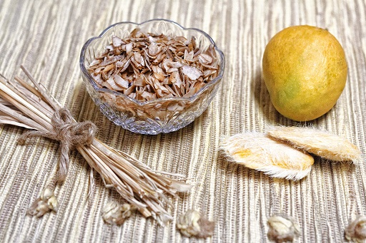
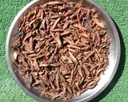

|
|
- 8-10 કેરીના ગોટલા
- 3-4 ચમચી જેટલું મીઠું
- સ્વાદમુજબ સંચળ પાઉડર
- 2 ચમચી જેટલું ઘી
|
|
કેરીના ગોટલાને ધોઈ ને 2-3 દિવસ તડકે મૂકી રાખો.પછી એને તોડીને અંદર થી ગોટલી કાઢી લો.
આ બધી ગોટલીને કૂકરમાં પાણી મૂકી મીઠું નાંખી હલાવીને 5-6સીટી વગાડી બાફી લો.
ગોટલી એકદમ ઠંડી પડે એટલે ચપ્પાની મદદથી એની પતલી કતરણ કરો.હવે આ કતરણ ને 5-7 કલાક પંખા નીચે સૂકવવા મૂકો.
એક કઢાઈમાં ઘી ગરમ કરી આ કતરણને ધીમા તાપે શેકી થોડી કડક થવા દો.પછી તરત જ એના ઉપર સંચળ પાઉડર ભભરાવી ઠંડી પડવા દો.પછી એને ઍરટાઈટ બરણીમાં ભરી લો. આ મુખવાસ લગભગ 12 મહિના સુધી સારો રહે છે.
|  |